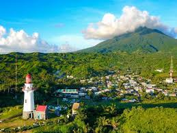

Batanes
Batanes (/bəˈteɪnz/; Ivatan: Provinsiya nu Batanes; Tagalog: Lalawigan ng Batanes, IPA: [bɐˈtanes]) is an archipelagic province in the Philippines, administratively part of the Cagayan Valley region. It is the northernmost province in the country, and also the smallest, both in population and land area. The capital is Basco, located on the island of Batan.
The name Batanes is a hispanicised plural form derived from the Ivatan endonym Batan.
The island group is located approximately 162 kilometres (101 mi) north of the Luzon mainland and about 190 kilometres (120 miles) south of Taiwan (Pingtung County), separated from the Babuyan Islands of Cagayan Province by the Balintang Channel, and from Taiwan by the Bashi Channel. The entire province is listed in the UNESCO tentative list for inscription in the World Heritage List. The government has been finalizing the site's inscription, establishing museums and conservation programs since 2001. Seven intangible heritage elements of the Ivatan have been set by the Philippine government in its initial inventory in 2012. The elements are undergoing a process to be included in the UNESCO Intangible Cultural Heritage Lists.
The ancestors of today's Ivatans descended from Austronesians who migrated to the islands 4,000 years ago during the Neolithic period. They lived in fortified mountain areas called idjangs and drank sugar-cane wine, or palek. They also used gold as currency and produced a thriving agriculture-based industry. They were also seafarers and boat-builders. Batanes was a major site for the Maritime Jade Road, one of the most extensive sea-based trade networks of a single geological material in the prehistoric world, operating for 3,000 years from 2000 BCE to 1000 CE.
In 1687, a crew of English freebooters headed by the slaver William Dampier came with a Dutch crew and named the islands in honour of their country's nobility. Itbayat was named "Orange Isle" after William of Orange, and Batan was named "Grafton Isle" after Henry FitzRoy, 1st Duke of Grafton. Sabtang Isle was named "Monmouth Isle" after James Scott, 1st Duke of Monmouth. Capt. Dampier stayed for less than three months, and did not claim the islands for the British crown.
In 2017, the provincial government began initiating the nomination of the entire province to the UNESCO Global Geoparks Network.
In 1783, the Spanish claimed Batanes as part of the Philippines under the auspices of Governor-General José Basco y Vargas. The Bashi Channel was increasingly used by English East India Company ships and the Spanish authorities brought the islands under their direct administration to prevent them falling under British control. Almost one-half of Batanes is hills and mountains. Batan Island is generally mountainous on the north and southeast. It has a basin in the interior. Itbayat Island slopes gradually to the west, being mountainous and hilly along its northern, eastern coast. As for Sabtang, mountains cover the central part, making the island slope outward to the coast.
The islands are situated between the vast expanse of the waters of Bashi Channel and Balintang Channel, where the Pacific Ocean merges with the China Sea. The area is a sea lane between the Philippines and Japan, China, Hong Kong and Taiwan. It is rich with marine resources, including the rarest sea corals in the world.
